Design-only artifacts for TrackMCP. The proposed screens use the real TrackMCP mark and wordmark geometry, the existing lucide-react icon vocabulary, and the current product evidence model.
local review only
Review scope: Overview, Adoption, Journeys, Quality, Issues, Evidence, Setup, and interaction states. Green indicates TrackMCP identity only; it does not indicate product health. All metrics are labeled with source, threshold, volume, and confidence where the design requires it.
Proposed desktop screens
Open any screen directly for a full-size SVG. Quality, Issues, and Evidence are rendered at both laptop review sizes and keep table behavior inside the content surface.
Overview, 1280 x 800Live/example state, KPI evidence, Needs attention, Work completed, and clear next actions above the fold.Overview, 1440 x 900Same hierarchy with additional breathing room.
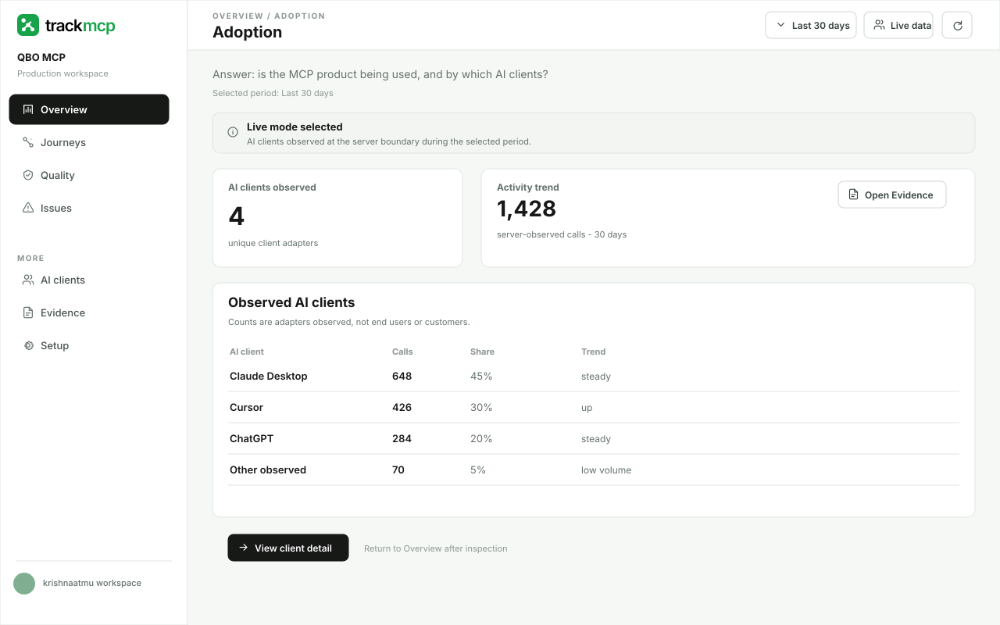
Adoption, 1280 x 800Adoption is a focused Overview view, not a new permanent top-level nav item.
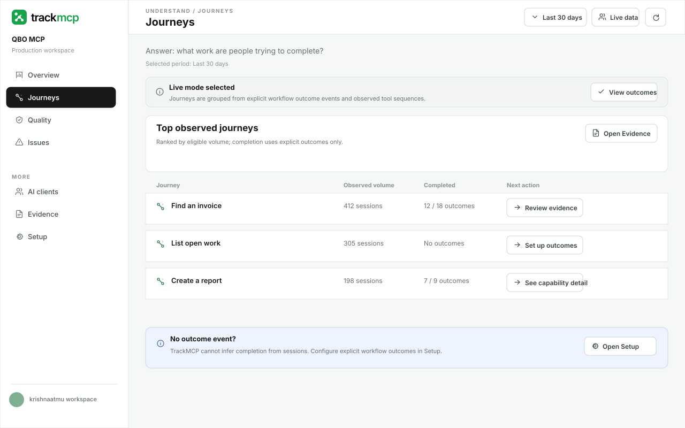
Journeys, 1280 x 800Explicit outcome events remain the only completion basis.
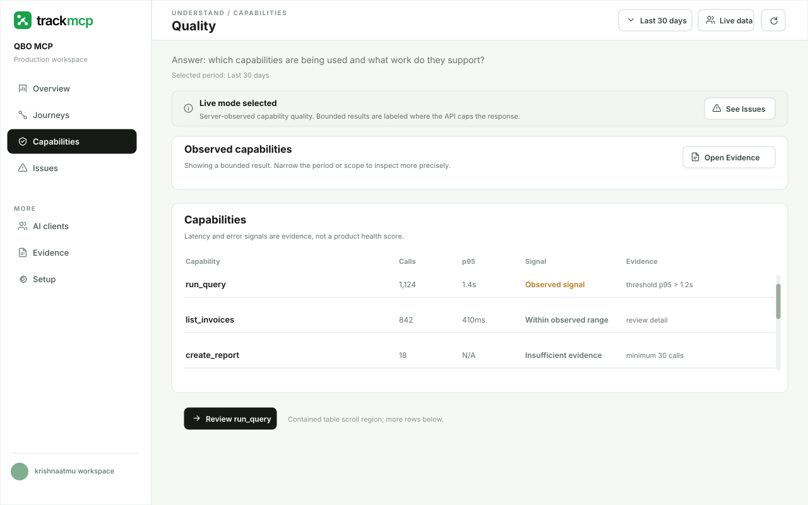
Capabilities, 1280 x 800Capability usage stays distinct from Quality evidence.
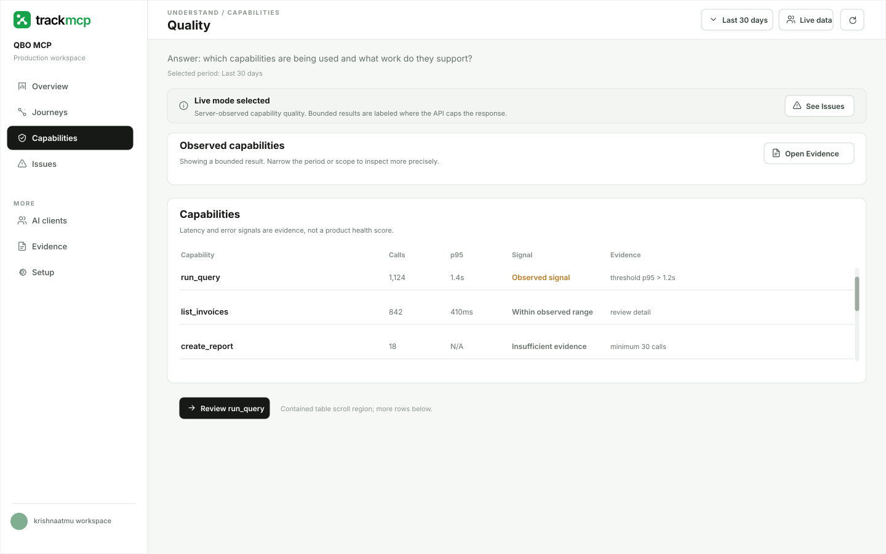
Capabilities, 1440 x 900Capability detail remains a business-readable path to Evidence.Quality, 1280 x 800Bounded result language and insufficient-volume states are visible.
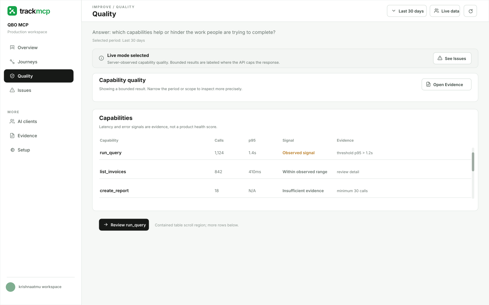
Quality, 1440 x 900Table remains inside the content surface.
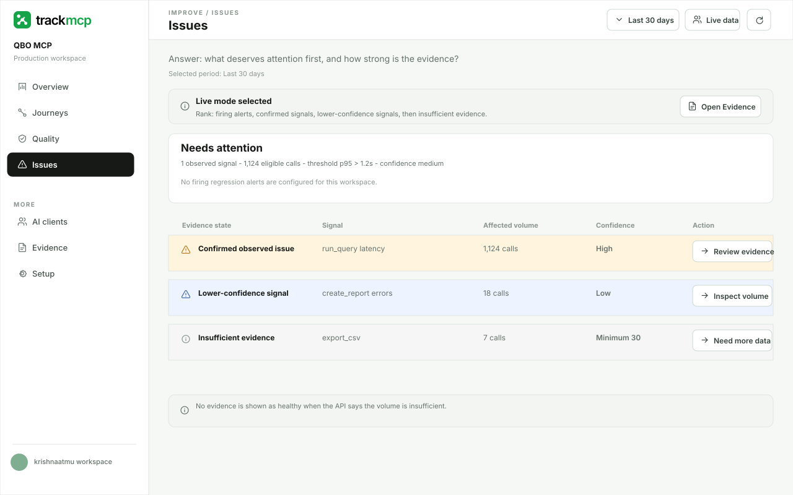
Issues, 1280 x 800Evidence state, affected volume, thresholds, confidence, and ranking are explicit.
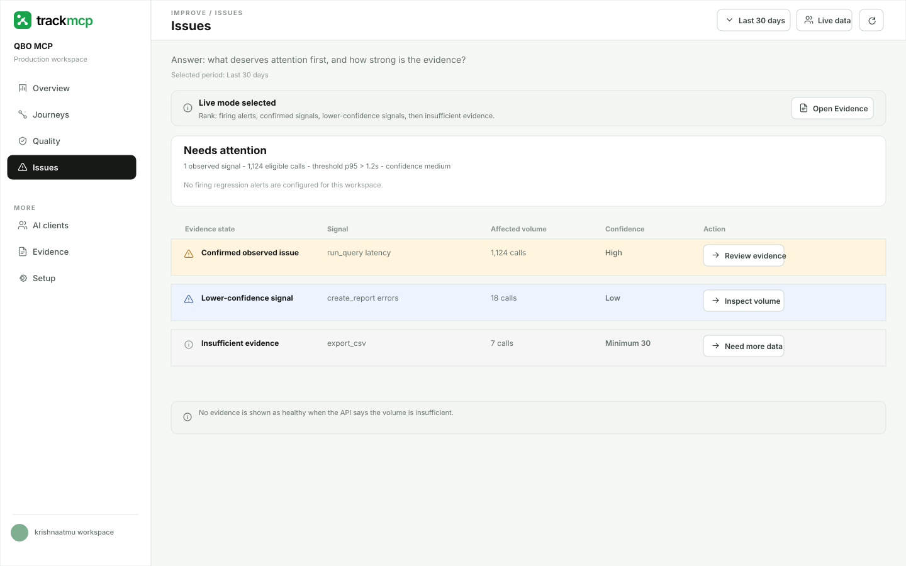
Issues, 1440 x 900No page-level horizontal overflow.
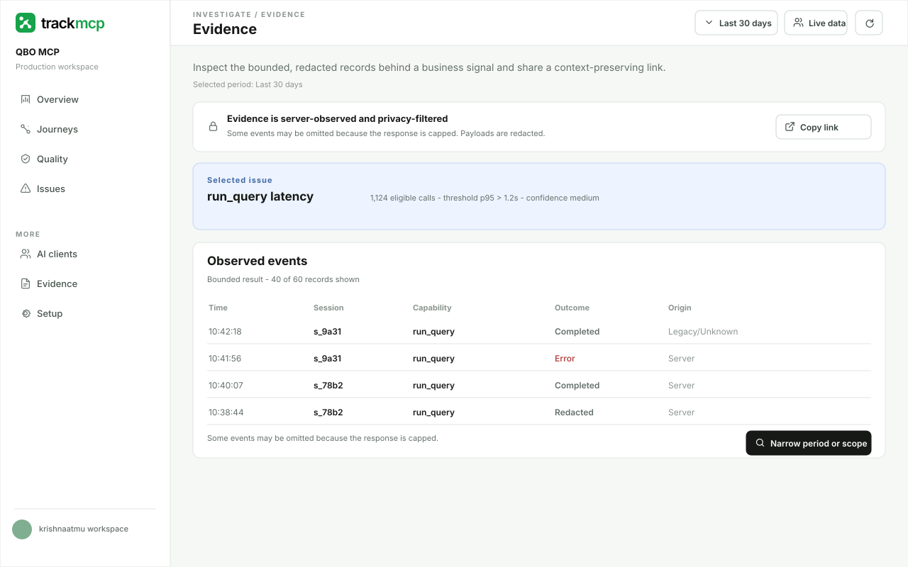
Evidence, 1280 x 800Full-page, shareable, bounded, redacted technical evidence view.
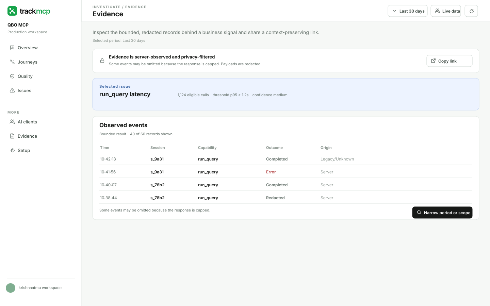
Evidence, 1440 x 900Origin shows Legacy/Unknown neutrally when the API cannot classify it.
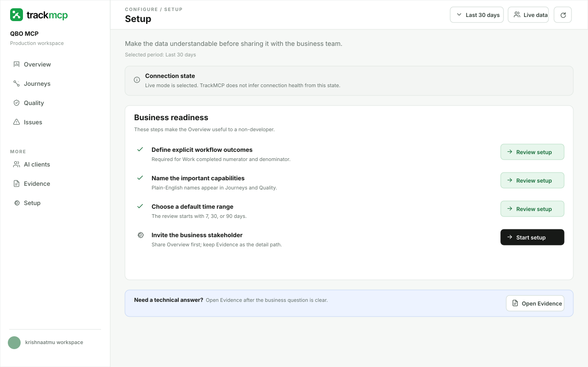
Setup, 1280 x 800Business readiness path for outcomes, naming, ranges, and sharing.
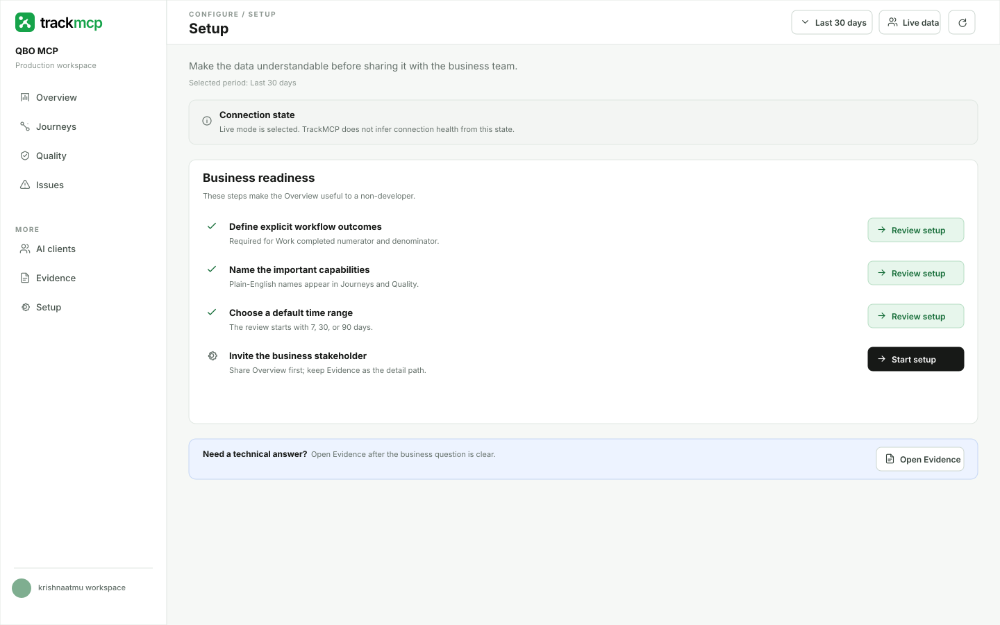
Setup, 1440 x 900Connection state is neutral and separate from product health.
Navigation and interaction inventory
The primary navigation follows business questions. Technical evidence remains available through one deliberate path.
Business-first navigationOverview, Journeys, Quality, Issues, AI clients, Evidence, Setup.
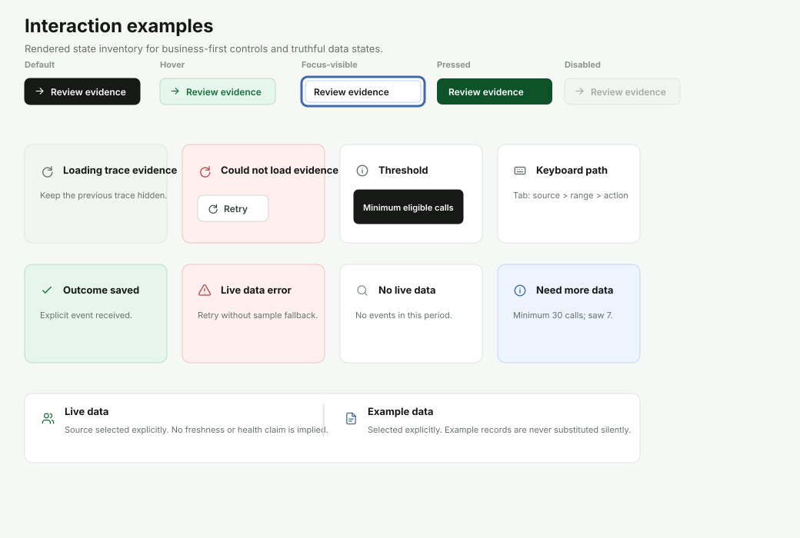
Rendered interaction examplesDefault, hover, focus-visible, pressed, disabled, loading, retry, tooltip, keyboard, success, error, empty, insufficient, live, and Example data states.Data state languageLive empty, live error, Example data, and insufficient evidence are explicit and never silently substituted.
Current evidence and comparison
The current captures are evidence of the real product surface; the proposed screens are design-only artifacts.
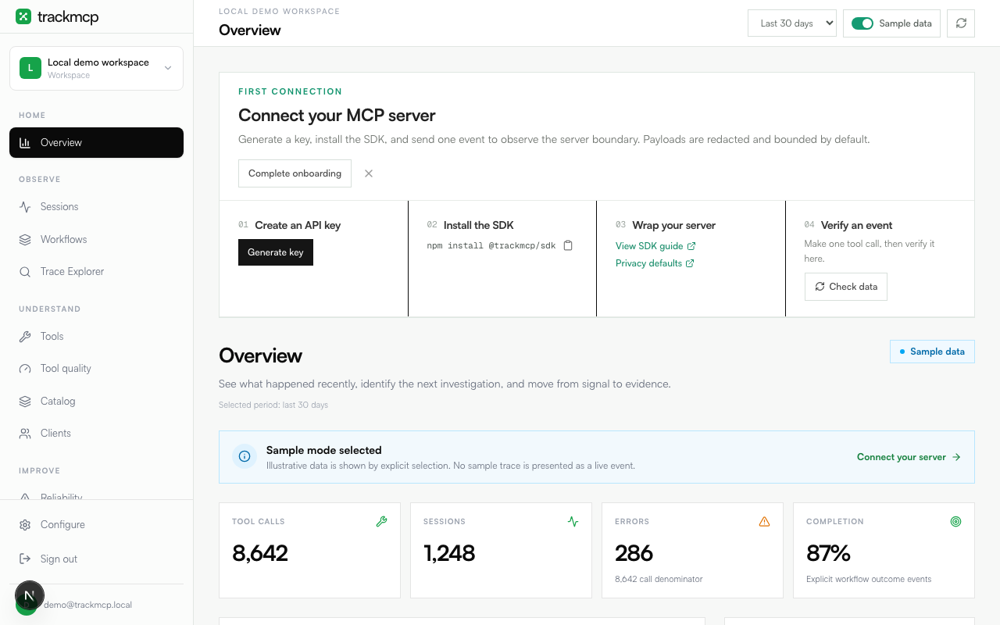
Current Overview, 1280 x 800Captured from the local product with the dashboard bypass.
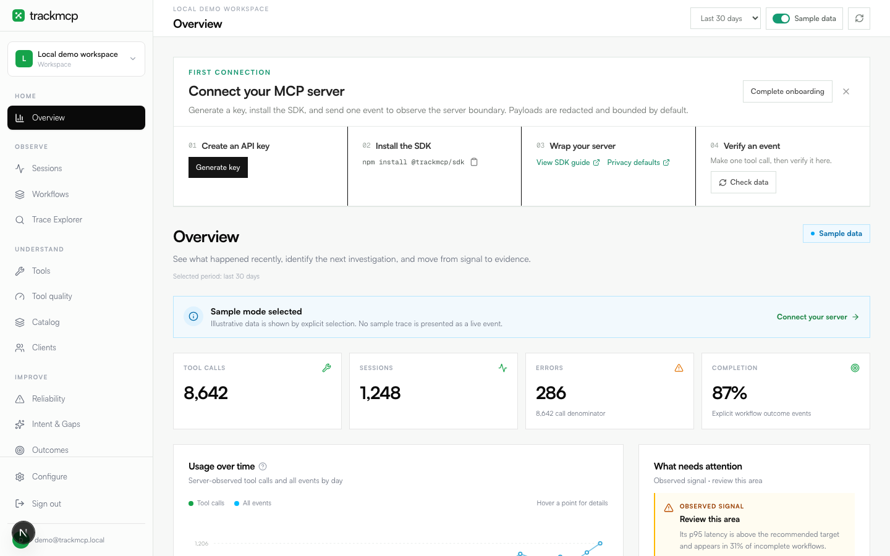
Current Overview, 1440 x 900Current technical hierarchy used as the redesign baseline.
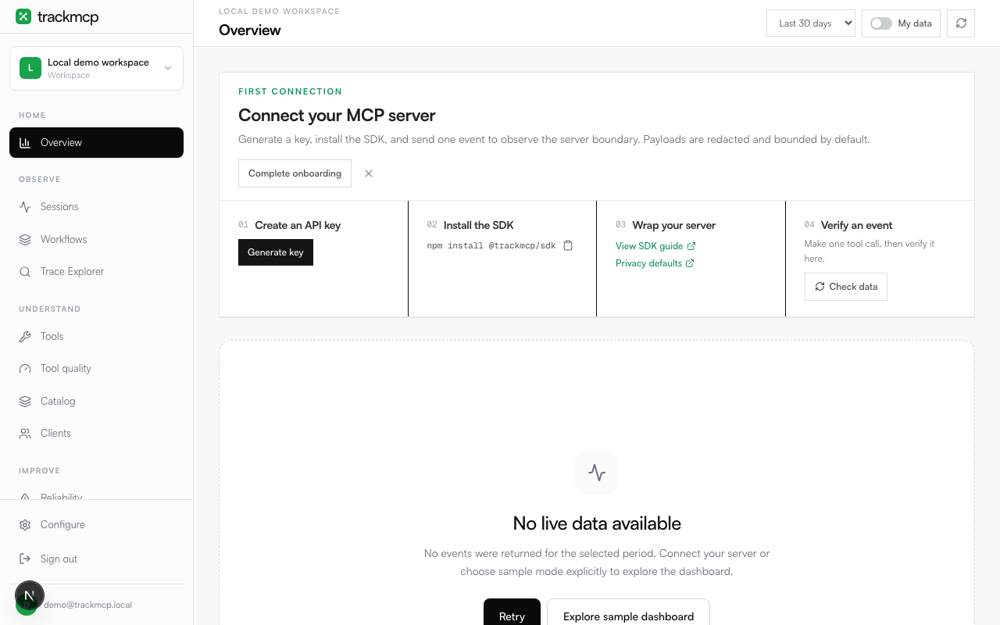
Current live empty, 1280 x 800Honest empty state evidence.
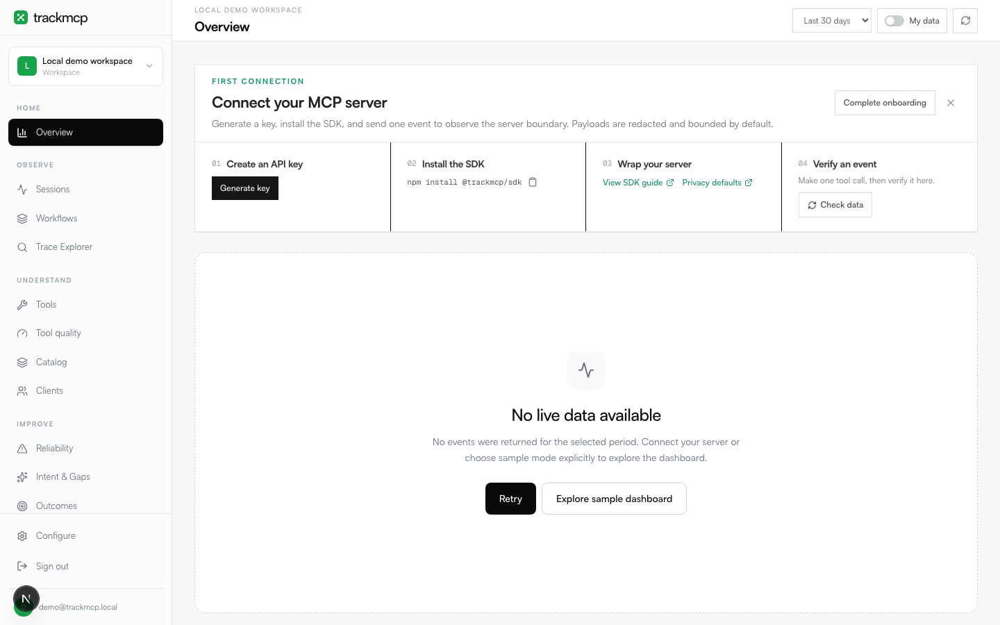
Current live empty, 1440 x 900Live empty state at the second required review size.
Authenticated production evidence: the live dashboard was opened read-only at https://app.trackmcp.com/dashboard in an existing workspace during this revision. It visibly loaded Overview, live mode, current technical navigation, KPI cards, explicit completion absence, and an observed-signal panel. Account-specific screenshot pixels are not stored in this package; the evidence log records the observed surface and limitation. Proposed screens remain local-only design artifacts.
Package root: design-plans/dashboard-business-first/. No production implementation is represented by this page.